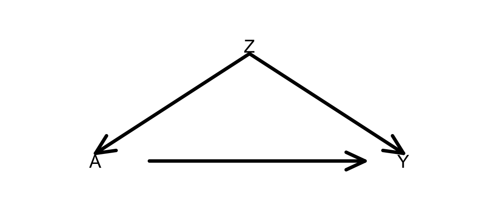

Topic 5 Estimating causal effects
Learning Goals
- Practice constructing a causal diagram from the ground up in consultation with fellow experts
- Extend d-separation ideas to the estimation of causal effects
- Develop the idea of inverse probability of treatment weighting (IPW or IPTW) for causal effect estimation
- Understand how the do-operator is related to inverse probability weighting
Exercise: DAG construction
Research question: What is the causal effect of participating in yoga once per week for 12 weeks on resting heart rate at the end of that period?
- We are trying to design an observational study that could be carried out at Macalester.
Recall our principles for constructing causal DAGs:
- A DAG is a causal DAG if it is common cause-complete: for any two variables in the DAG, common causes (whether measured or unmeasured) of those variables are shown.
- A causal DAG does NOT need to be cause-complete (infeasible due to infinite regress of causes).
- It should contain variables that are selected on, and subsequently common causes between those variables and existing variables.
Reflect: Write about the process of constructing the causal diagram with your colleagues.
- How did your discussions flow?
- How did you resolve (or not) any disagreements on the structure?
- Were you able to decide if your diagram was good enough? If so, how?
- What questions or concerns do you still have about this process?
Further reading:
- Chapter 9 of our WHATIF book (see References) introduces the consideration of measurement error. We won’t talk about measurement error in this course but you are welcome to read about these ideas on your own.
- Chapters 6, 7, and 8 talk about causal diagrams, confounding, and selection bias. This another resource to complement PRIMER.
Warm-up: d-separation
Navigate to:
Slides of the causal diagrams (with solutions) are available here.
Discussion: Estimating causal effects
In adjusting for variables in our analysis, we want to “do no harm”:
- Block non-causal paths that generate unwanted associations
- Do not accidentally create non-causal paths that generate unwanted associations
- Leave causal paths (chains) alone
This was actually the rationale behind the backdoor criterion. (We’ll get back to this soon.)
The do-operator
- One notion of causation is that of intervention: setting a variable’s value
- There is a difference between \(P(Y \mid A = a)\) and \(P(Y \mid \hbox{do}(A = a))\).
- \(P(Y \mid A = a)\) is an observational probability
- \(P(Y \mid \hbox{do}(A = a))\) is an intervention probability
- When we intervene on \(A\), this amounts to removing all arrows into \(A\).

- The do-operator allows us to graphically simulate interventions.
- In the world that was intervened on (manipulated), what do relationships between variables look like?
- Rules of probability combined with a set of graph rules (called the do-calculus) allow us to relate the relationships in the manipulated graph to relationships that we observe in the real world.
\[ \hbox{Average causal effect} = P(Y = y \mid \hbox{do}(A = 1)) - P(Y = y \mid \hbox{do}(A = 0)) \]
- \(Y\) is the outcome and \(A\) is the treatment (action) variable
Taste of do-calculus next week. For now, let’s approach effect estimation from a different angle:
- The mathematical expressions in PRIMER for \(P(y \mid \hbox{do}(a))\) had something in common –> let’s develop this idea and relate to something familiar: d-separation
Notes: deriving inverse probability weighting
- If treatment \(A\) and outcome \(Y\) are d-separated given \(Z\) under the null (under the null hypothesis of no causal effect), then there are no open “spurious” paths generating unwanted associations between \(A\) and \(Y\).
- No open backdoor paths (paths with arrows into \(A\)): these generate confounding.
- No paths with collision nodes or descendants of collision nodes that are conditioned on: this opens paths that would otherwise be naturally blocked by the collision nodes.
- Then the outcomes of the treated and untreated are “comparable”.
- No open spurious paths.
- If the outcomes of the treated and untreated are “comparable”, then…
- We can upweight those treated to “create” a population where everyone was treated –> look at outcome distributions in this population (e.g., \(P(Y = 1)\)).
- These weights are the inverse of \(P(A = 1\mid Z)\).
- We can upweight those not treated to “create” a population where everyone was not treated –> look at outcome distributions in this population (e.g., \(P(Y = 1)\)).
- These weights are the inverse of \(P(A = 0\mid Z)\).
- We can upweight those treated to “create” a population where everyone was treated –> look at outcome distributions in this population (e.g., \(P(Y = 1)\)).
- These outcome distributions are actually interpreted as:
- All treated: \(P(Y = 1 \mid \hbox{do}(A = 1))\)
- All not treated: \(P(Y = 1 \mid \hbox{do}(A = 0))\)
- Note: we have appealed to what it conceptually means to do/intervene. We haven’t done any “graph surgery”.
\[ \hbox{Average causal effect} = \hbox{ACE} = P(Y = 1 \mid \hbox{do}(A = 1)) - P(Y = 1 \mid \hbox{do}(A = 0)) \]
- If ACE = 0.1, interpreted as:
- The probability of recovery (\(Y = 1\)) is 10% higher if we treat everyone, as compared to if we treat no one.
- The individual “do” probabilities are actually weighted averages of the outcome variable: \[ P(Y = 1 \mid \hbox{do}(A = a)) = \frac{\sum_i w_i y_i}{\sum_i w_i} \]
- \(w_i\) is the appropriate weight for case \(i\)
- \(y_i\) is the outcome for case \(i\)
- The sum is over all treated for \(a = 1\) and over all untreated for \(a = 0\).
Punchline: If treatment \(A\) and outcome \(Y\) are d-separated given \(Z\) under the null, we can estimate desired “do” probabilities with
\[ P(Y = 1 \mid \hbox{do}(A = a)) = \frac{\sum_i w_i y_i}{\sum_i w_i} \]
where the weights \(w_i\) are the inverse propensity scores:
- \(w_i = 1/P(A = 1 \mid Z)\) if \(a = 1\)
- \(w_i = 1/P(A = 0 \mid Z)\) if \(a = 0\)
When \(Z\) contains many variables, we can’t tabulate as we did by hand (too many combinations of predictor levels relative to our sample size). Need to model treatment as a function of the variables in \(Z\).
- Logistic regression
- Other techniques from Statistical Machine Learning
Exercise: Simulation planning
Goal: Plan (then implement) a simulation that shows that inverse probability of treatment weighting (IPTW) to estimate average causal effects gives the same results as using the do-operator. This will be done in the context of the DAG below.

Plan: As you go through this planning, think about what code you would have to write (in broad terms) and the order in which you would have to run those commands. For this exercise, don’t look at the code below. We’ll get to it next.
- Phase 1:
- How would you simulate the DAG below? (All variables binary.)
- How would you simulate new versions of
Yunder the manipulated graphs resulting fromdo(A = 1)anddo(A = 0)? - How would you compute the average causal effect from
do-ing?
- Phase 2:
- How would you estimate the propensity score for each individual?
- How would you estimate
P(Y = 1 | do(A = 1))andP(Y = 1 | do(A = 0))using those estimated propensity scores?
After your planning phase, step through the code in the section below, and make sure that you understand what each line is doing. Clarify with the instructor as needed.
Simulation example
A template Rmd is available here.
Task 1: What is the point of this simulation exercise? What are we trying to show? Clearly explain how we are approaching causal effect estimation from two seemingly different viewpoints.
Task 2: Explain in detail all steps taken in this code. Do this by breaking the code into smaller code chunks and adding text in between.
library(dplyr)Phase 1:
set.seed(22)
n <- 1e6
Z <- rbinom(n, size = 1, prob = 0.5)
p_A <- dplyr::case_when(
Z==1 ~ 0.8,
Z==0 ~ 0.3
)
A <- rbinom(n, size = 1, prob = p_A)
p_Y <- dplyr::case_when(
Z==1 & A==1 ~ 0.3,
Z==1 & A==0 ~ 0.6,
Z==0 & A==1 ~ 0.9,
Z==0 & A==0 ~ 0.2
)
Y <- rbinom(n, size = 1, prob = p_Y)
A_do_1 <- rep(1, n)
A_do_0 <- rep(0, n)
p_Y_Ado1 <- dplyr::case_when(
Z==1 & A_do_1==1 ~ 0.3,
Z==1 & A_do_1==0 ~ 0.6,
Z==0 & A_do_1==1 ~ 0.9,
Z==0 & A_do_1==0 ~ 0.2
)
Y_Ado1 <- rbinom(n, size = 1, prob = p_Y_Ado1)
p_Y_Ado0 <- dplyr::case_when(
Z==1 & A_do_0==1 ~ 0.3,
Z==1 & A_do_0==0 ~ 0.6,
Z==0 & A_do_0==1 ~ 0.9,
Z==0 & A_do_0==0 ~ 0.2
)
Y_Ado0 <- rbinom(n, size = 1, prob = p_Y_Ado0)
sim_data <- data.frame(Z, A, Y, Y_Ado1, Y_Ado0)
sum(sim_data$Y_Ado1==1)/n
sum(sim_data$Y_Ado0==1)/n
(sum(sim_data$Y_Ado1==1)/n)-(sum(sim_data$Y_Ado0==1)/n)Phase 2:
# Fit a logistic regression model to estimate propensity scores
ps_mod <- glm(A ~ Z, data = sim_data, family = "binomial")
# Get the actual propensity scores
# predict(..., type = "response") gives the predicted probabilities from logistic regression
# What computations are going on behind the scenes?
sim_data$PS <- dplyr::case_when(
A==1 ~ predict(ps_mod, type = "response"),
A==0 ~ 1-predict(ps_mod, type = "response")
)
# Form inverse probability weights
sim_data$weight <- 1/sim_data$PS
# Use the IP weights to estimate:
# (1) the average outcome if all people were treated
# (2) the average outcome if all people were untreated
# group_by() forms groups according to the given variable
# summarize() computes a summary measure for those groups
results <- sim_data %>%
group_by(A) %>%
summarize(Y_po_estim = sum(Y*weight)/sum(weight))
# Display estimates (1) and (2)
results
# Compute the estimated average causal effect (ACE)
# How does it compare to the truth from "do"ing?
diff(results$Y_po_estim)On your own
Adapt the simulation to a situation with 2 confounders Z and W as in the DAG below:
Note: To simulate dependence on 3 or more variables (e.g., A depends on B, C, and D), an easier approach is to do as below:
p_B <- dplyr::case_when(
B==1 ~ 0.8,
B==0 ~ 0.4
)
p_C <- dplyr::case_when(
C==1 ~ 0.9,
C==0 ~ 0.5
)
p_D <- dplyr::case_when(
D==1 ~ 0.7,
D==0 ~ 0.1
)
p_A <- p_B*p_C*p_DIf ever D is equal to 1 for all cases, p_A can be updated as:
p_A_D1 <- p_B*p_C*0.7If ever D is equal to 0 for all cases, p_A can be updated as:
p_A_D1 <- p_B*p_C*0.1Questions and Tasks:
When you generate \(A\), use the following probabilities:
p_A <- dplyr::case_when(
Z==1 & W==1 ~ 0.3,
Z==1 & W==0 ~ 0.6,
Z==0 & W==1 ~ 0.9,
Z==0 & W==0 ~ 0.2
)How close are your estimates of the ACE from IP weighting and from graph surgery?
Take a careful look at the probabilities used to generate the treatment \(A\), and re-examine the form of your propensity score model. Thinking about what the coefficients mean in your propensity score (PS) model, what would you need to do to improve your propensity score model?
Fit this new PS model as
ps_mod2. Add a second PS variablePS2, and create a correspondingweight2variable.Store the results from both PS models with something similar to below, Display the estimated ACE resulting from both models.
results <- sim_data %>% group_by(A) %>% summarize( Y_po_estim1 = sum(Y*weight1)/sum(weight1), Y_po_estim2 = sum(Y*weight2)/sum(weight2) )Repeat this simulation using numbers for
p_Athat make the simpler PS model valid. As before, show the results of both the simpler and more complex PS model.